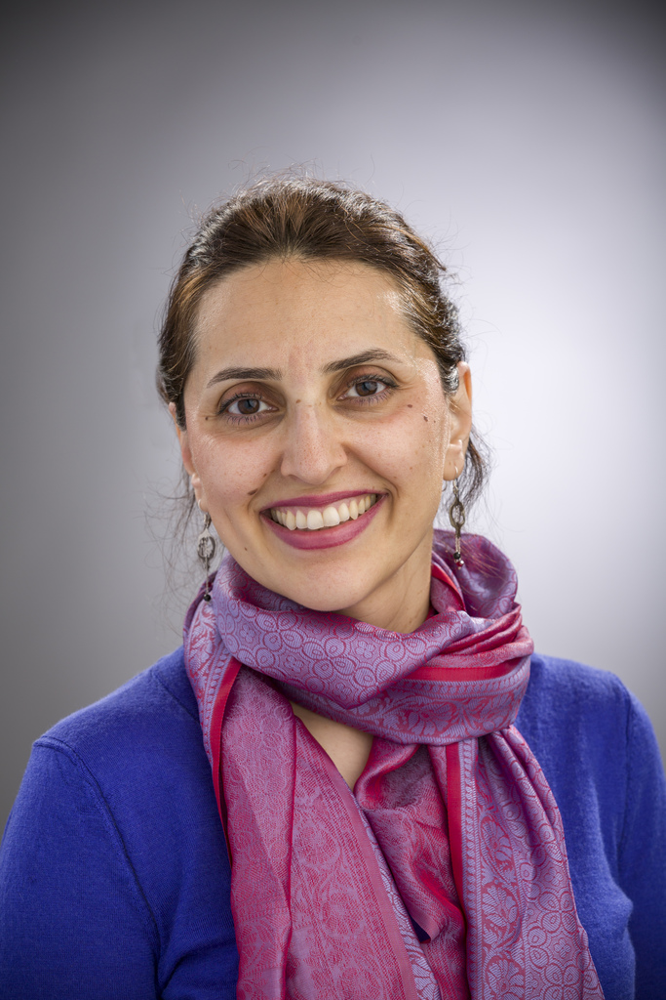
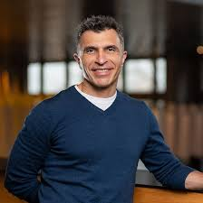

About Us — Cascade Insights LLP
We are a statistical consultancy firm based in Seattle, WA. We provide biostatistical services for design and analysis of common studies, such as prospective randomized trials, as well as specialized consulting on complex study designs, integration of generative artificial intelligence methods, and statistical approaches for collection, integration, and analysis of complex and real-world data. Our services include methodological guidance, statistical analysis, educational training, and technical support for industry, academic, and governmental clients. Please visit our services page to learn more about how we can help.
Our name pays homage to the Cascades, a major mountain range in western North America. The name also underscores three elements of statistical consulting that are at the core of our practice: (1) study design and analysis plans have a cascading effect on quality and relevance of insights; (2) similar to mountains in the range, each study has distinct features that may differ from others and would require unique approaches and perspectives; and (3) just as the Cascades shape the continent's climate through their collective presence rather than individual peaks, statistical practice achieves impact through collaboration and partnerships.
Our Team

Sahar Zangeneh, PhD
Founder & Principal Consultant
Sahar Zangeneh (she/her) is a (bio)statistician specializing in the design and analysis of experimental and observational studies, including complex sample surveys, individual- and community-randomized trials, and observational cohort studies. Her methodological work focuses on developing statistical methods for addressing missingness and non-random selection, particularly when missingness or selection depends on unobserved factors (missing not at random). Her collaborative research addresses population health and health equity across biomedical and epidemiological domains. She is a Clinical Associate Professor at the University of Washington, where she teaches graduate courses and mentors students.

Ali Shojaie, PhD
Co-founder & Principal Consultant
Ali Shojaie (he/him) is the Norm Breslow Endowed Professor of Biostatistics and Statistics at the University of Washington, where he serves as Interim Chair of the Department of Biostatistics. His research lies at the intersection of statistical machine learning, statistical network analysis, and applications in biology and social sciences. He is the founding director of the Summer Institute for Statistics in Big Data (SISBID) at the University of Washington and Lead of the Data Management and Statistics (DMS) Core of the UW Alzheimer's Disease Research Center (ADRC).